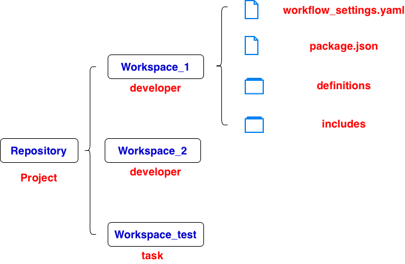

Dataform
Layout

- Repository
- Workspace
- One team member’s personal development area
- One task/feature/experiment someone is working on
- workflow_setting.yaml
- Configuration file for the whole project
- package.json
- JavaScript package dependencies
- definitions/
- Contains the actual SQL/data pipeline logic
- GCP Dataform supports SQLX files in different subdirectories, and compilation automatically discovers them and builds a DAG (Directed Acyclic Graph) based on their dependencies
- JS files as a workflow definition, such as, creating tables
- includes/
- Reusable JavaScript variables and functions
Workflow
Execution & Run
- Execution
- Generate BigQuery SQL and dependency graph
- Run SQL queryies in BigQuery to create/update tables and views
- Run
- Executes SQL for preview, creates temporary query results
- Do not create the target tables and views
- Rerun the scirpts will replace the output table with the latest query result
Schedule
ML
GitHub